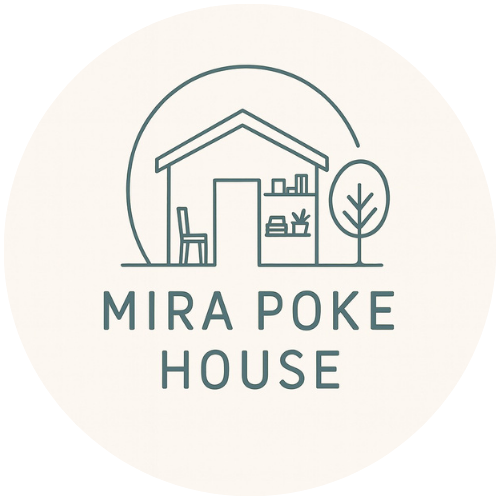

こどもから大人まで
心に寄り添う時間を
みらぽけの想い
お知らせ
「みらぽけ相談室」無料相談会のご案内
子育ての悩み、発達の気になることなど、専門のスタッフがお話を伺います。お気軽にご予約ください。
- 日時: 随時受付中
（土・日・祝日、営業時間外も対応しています） - 形式: 完全予約制
- 時間: 1回50分程度
みらぽけの特徴
こどもから大人まで切れ目のない支援
あらゆるライフステージに寄り添い、子どもから大人まで切れ目のない長期的な支援を提供します。
家族への心のケア
大切な方を支えるご家族が、お一人で不安や悩みを抱え込むことのないように。ご家族が心穏やかでいることは、ご本人の安心にとって不可欠です。
私たちは、ご本人だけでなくご家族の心のケアも大切にしています。関わり方のご相談や、『ただ話を聴いてほしい』という時など、スタッフが寄り添います。
ご家族だけで抱え込まず、どうぞ私たちを頼ってください。皆様のチームの一員として一緒に伴走します。
フリースペース併設
「みらぽけのいえ」

ご自宅以外のもう一つの居場所として、安心して過ごせるフリースペースを併設しています。ここでは、SST（ソーシャルスキルズトレーニング）やCBT（認知行動療法）といった専門的なアプローチを取り入れた支援のほか、遊びや交流を通して、人との関わりの中で自然にスキルを育むお手伝いをします。
カウンセリングルーム併設
「cocod（ここで）」
「誰かに話を聴いてほしい」「目標に向かって一歩踏み出したい」
そう感じた時に、どなたでも気軽に頼れる場所として、ステーション内にカウンセリングルームをご用意しました。
担当するのは、臨床経験豊富な看護師であると同時に、専門的なカウンセリング資格を保有しているスタッフです。心の専門家が、カウンセリングやコーチングを通して、あなたの悩みや目標にじっくりと向き合います。
現在、当ステーションの訪問看護をご利用でない方も、どうぞ安心してお越しください。また、遠方にお住まいの方やご自宅でリラックスして受けたい方のために、オンラインでの対応も可能です。
ご利用について
有料のサービスとなります。
カウンセリング／コーチング
料金：50分 11,000円（税込）
ご利用案内
準備中です。
スタッフ紹介
代表
二神 秀樹
フタガミ ヒデキ
資格
- 看護師
- 公認心理師
- アドラー流メンタルトレーナー
- 日本DPAT隊員（災害派遣精神医療チーム）
- 日本ペアレントトレーニング研究会ファシリテーター
所長
石井 宏昌
イシイ ヒロマサ
資格
- 看護師
- 公認心理師
- 日本メンタルファウンデーション・コーチ協会 認定プロフェッショナルコーチ
お問い合わせ
ご相談やご質問は、お電話または以下のフォームよりお気軽にご連絡ください。